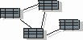

Artifacts >
Artifacts >
 Analysis & Design Artifact Set >
Analysis & Design Artifact Set >
 Data Model
Data Model
Artifacts >
Analysis & Design Artifact Set >
Data Model
Artifact:
| ||||||||||||||||||||||||||||||||||||||||||||||
 Data Model |
The data model is a subset of the implementation model which describes the logical and physical representation of persistent data in the system. It also includes any behavior defined in the database, such as stored procedures, triggers, constraints, and so forth. |
| UML representation: | A top-level Package stereotyped as «data model», containing a set of Components which represent the physical storage of persistent data in the system. |
| Role: | Database Designer |
| More information: | |
| Optionality: | Optional if the system has no persistent data |
| Input to Activities: | Output from Activities: |
The data model is used to describe the logical and possibly physical structure of the persistent information managed by the system. The data model is specifically needed where the persistent data structure cannot be automatically and mechanically derived from the structure of persistent classes in the design model. It is used to define the mapping between persistent design classes and persistent data structures, and to define the persistent data structures themselves. It is most frequently needed when the design model is an object model and the persistent storage mechanism is based upon a relational database, although it is generally needed whenever the persistent storage mechanism is based upon some non-object-oriented technology.
|
Property Name |
Brief Description |
UML Representation |
| Introduction | A textual description that serves as a brief introduction to the model. | Tagged value, of type "short text". |
| Packages | The packages used for organizational grouping purposes. | Owned via the association "represents", or recursively via the aggregation "owns". |
| Tables | The tables in the data model, owned by the packages. | Components, stereotyped as «table». |
| Relationships | The relationships between tables in the model. | Associations, stereotyped as «foreign key». |
| Columns | The data values of the tables. | Attributes, stereotyped as «column». |
| Diagrams | The diagrams in the model, owned by the packages. | - " - |
| Indexes | Data access structures used to speed access along specified paths. | Components, stereotyped as «index». |
| Triggers | Event-activated behavior associated with tables. | Operation, stereotyped as «trigger». |
| Procedures | Explicitly invoked behavior, associated with tables or with the model as a whole. | Component, stereotyped as «procedure». |
The Data Model is created in the Elaboration phase, based upon architecturally significant persistent classes. The Data Model is refined and expanded during the Construction phase.
A database designer is responsible for the integrity of the data model, ensuring that the data model as a whole is correct, consistent, and understandable.
Needs to be adapted to the semantics of the database, which may vary slightly
between RDBMSes. Object Database systems have quite different semantics and the
model described above needs to be modified accordingly.
|
Rational Unified
Process
|